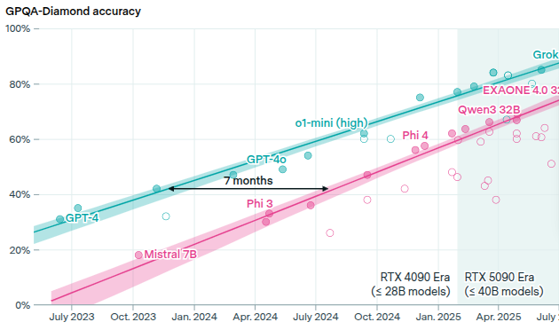
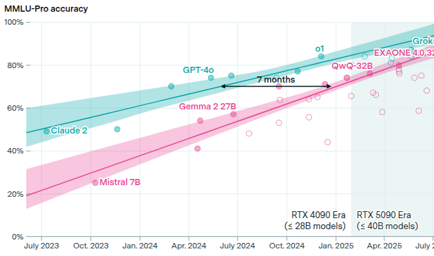

How this works
The presentation starts in a few slides
Use the arrow keys to go back/forward
Use the Esc key to toggle an overview
If you are using a phone: Swipe up to proceed
Playing the long game
🤖 In the age of LLMs 🤖
What does "the long game" look like?
- Signal to noise ratio = terrible
- Emerging best practices
- Emerging footguns
- Deluge of new tools and opinions - AI fatigue
- New roles and organization structures
- Economically concerning
- Environmentally concerning
- Will there be software engineers in 5 years?
Hi, I'm Sheena
- Software engineer + lead
- Educator
- Science of ed => Engineering of ed
- Non-profit - launching tech careers in 🇿🇦
- Prelude - Advanced Python + Teamwork
- Guild of Educators
Python community involvement
- PSF Director
- Conference organizer
AI and education
- Preparing people for the future is my whole focus
- Work on multiple scales: Individuals, teams, organizations
- Lots of people ask me for career advice
😨
What are we doing here
- My latest thinking
- Not the final word
Chapter 1
Will we still need software engineers in the future?
What's a software engineer anyway?
Someone who can solve problems by producing software
AGI Powerful AI
Smarter than a Nobel Prize winner across most relevant fields ... It can prove unsolved mathematical
theorems, write extremely good novels, write difficult codebases from scratch ...
Darioa Modei - Anthropic Co-Founder and CEO
Rapid succession of GPTs
- 2018: GPT 1
- 2019: GPT 2 (post-training/fine tuning)
- 2020: GPT 3
2020: Kaplan paper
- Model: Up to 175B parameters (GPT-3)
- Data: ~300B tokens
- Ratio: ~1.7 tokens per parameter
Performance = f( parameters, dataset_size, compute)
2020: Kaplan paper
Performance = f( parameters, dataset_size,
compute)
2022: Deepmind Chinchilla paper
- Chinchilla = 70-billion-parameter model on 1.4 trillion tokens (20 t/p)
- GPT-3 = 175 billion parameters
- Chinchilla out-performed these while MUCH smaller
2024: Plot twist 🍓
- Open AI releases o1. A reasoning model.
- != GTP4 + 💸💸💸
- != GPT5
- Iterative, chain-of-thought reasoning
- Come up with multiple answers, evaluate, return best one
- Post-training + refinement
- New scaling axis: Test time compute
"The 2010s were the age of scaling, now we're back in the age of wonder and discovery once again.
Everyone is looking for the next thing"
- Ilya Sutskever
OpenAI co-founder | Safe Superintelligence Inc co founder
2025: Plot twist

Deepseek benchmarks

Deepseek mixture of experts

Training cost

Economic Instability
- January 2025, NVIDIA set the record for most money lost in a day (~ $600
Billion)
- NVIDIA held the previous record
Feb 2025
"The intelligence of an AI model roughly equals the log of the resources used to train and run it.
These resources are chiefly training compute, data, and inference compute. It appears that you can
spend arbitrary amounts of money and get continuous and predictable gains; the
scaling laws that predict this are accurate over many orders of magnitude."
- Sam Altman
Are scaling laws really "laws"
- Different conclusions by different research groups
- Different model architectures => different results and costs
- Inference-time algorithms matter a lot
- Foundational theory missing
2025 July. GPT 5
- Generally underwhelming
- Is this a sign of diminishing returns? Or a rushed release? Or not well
understood by users?
Chasing diminishing returns
Small improvement in model capability on small task => exponential improvement in multi-step tasks
Cambrian explosion of LLM applications
Even of frontier LLMs stopped getting better
Chapter 2
The bubble
Oh what a tangled web...
Magnificent 7
~ 35% of US stock market
- NVIDIA
- Microsoft
- Apple
- Alphabet(Google)
- Amazon
- Meta
- Tesla
What happens if the bubble bursts?
- Remember dot com
- The Internet is still a thing




Strength in diversity of models
- Use tools that are not tied to one model provider
- You don't need the latest greatest model for everything
- More guardrails => better chance of getting things right
Job market crash

US Job postings on Indeed
Recovery

What's happening?
- Natural attrition => job openings
- Vibe code => new opportunities
- Vibe code cleanup specialist
- More entrepreneurs
- New jobs: AI-security, observability, ops...
Place your bets...
Will software engineering still be a thing in 5 years?
More than just a job title
- Process/system/critical thinking
- Precision in communication
- Understanding edge cases
- Dealing with uncertainty
- Knowledge management
- Learning, experimentation, research
- Grit, mental discipline, habits of validation
How do we build those skills?
How do we build those skills?
By doing the reps
For anyone who thinks they will need devs in 5 years...
Where will you find them?
Future talent
- Bootcamps?
- Universities?
- Apprenticeships
- Grad programs
Chapter 4
Advice for Organizations
And the people in them
Invest in AI adoption
Where should the resources go?
70:20:10 rule
- Boston Consulting Group
- 1000 CxOs and senior execs
- > 20 sectors
- 59 countries
- Where value comes from
- Problems faced
70:20:10 rule
- 70% People
- 20% Data + Infra + Tools
- 10% AI models and algorithms
Invest 70% resources into people
- Culture
- Training
- Structures
Psychological safety
MIT Technology Review survey of 500 business leaders
- 83% believe a company culture prioritizing psychological safety measurably
improves AI success
- 84% observing connections between psychological safety and tangible AI outcomes
- 39% rate their organization's current psychological safety as "very high."
Why is it so important for AI adoption?
- We are in a new age of discovery
- AI fatigue is a thing
- AI is best explored together
- Change is hard
People are scared
- Don't want to lose their jobs
- More fear in orgs with higher AI adoption
Addressing AI fears directly
- Invest in psychological safety
- Use AI to make employees lives better: reduce pain, improve growth and mobility
- Make it safe to experiment and fail
- Make it clear that we need to generate knowledge
Job security
PWC 2025 Global AI Jobs Barometer
close to a billion job ads from six continents
- 2023: AI-skilled workers average 25% wage premium
- 2024: average 56% wage premium
- The skills sought by employers are changing 66% faster in jobs ‘most exposed’
to AI
How to support people
- Training
- Subject matter expertise != Teaching expertise
- Make time - Structured and unstructured
- Knowledge + tool management
- Reward collective performance
The AI augmented team member
- More agency
- Bigger blast radius
- More bombs
- Alignment is more important
- Big picture understanding
AIs negative cognitive effects on humans
-
It's often more comfortable or more efficient to talk to an AI than a human
- Loneliness ++
- Thinking --
Anchoring

Echo-chambers

The first principle is that you must not fool yourself and you are the easiest person to fool.
- Richard P. Feynman
The new bottleneck...
Reviewing code
⚠️
AI generated code
- More security issues
- More logic errors
- More weird bugs
- More readability issues
- Debugging code often takes longer than writing it
A reverse centaur is machine head on a human body, a person who is serving as a squishy meat
appendage for an uncaring machine.
Cory Doctorow
Reviewing reams of code that are statistically indistinguishable from working code is not the best
way to spot bugs.
Bugs become less common
People will get worse at spotting them
The human in the loop becomes the accountability sink
When putting a human in the loop
Design with their humanity in mind
Stanford study on developer productivity
- 100K+ engineers
- Billions of LOC
- Millions of commits
- 80% private repos
Stanford Conclusions
- Average productivity gain: 15-20%
- Greenfield > Brownfield
- Simple > Complex
- Popular languages > Rare languages
- Can decrease productivity by 20% on high complexity tasks
Technical choices
- Clean code => clean context
- Choose tools with simple context
Successful AI adoption
- Humans have more agency
- Human dependencies change
- Bottlenecks change
Where is the value?
- Optimizing existing processes
- Core business activities
Where is the value?
Most value comes from core activities
How organizations are changing
Org chart Dynamic, high agency project-based teams
- More storming and norming
- Focus: high trust, connected, transparent
-
Shorter planning cycles
- Shiny new toy syndrome
- Protect attention, close loops, bias to finish
- Rethink existing workflows
What happens if the bubble pops?
Recommendations
- Don't always use the latest-greatest stuff
- Focus on using models well
- Benchmarks and monitoring
- Good context
- Guardrails
- Build flexibility rather than lock in
- Build tools that allow safe experimentation and rollout
- Remember 70:20:10
Translating to the individual
- Hone your craft, mind and character
- Communication and orchestration
- Maximize your agency + solve problems
- Be willing to re-examine foundational beliefs
Thank you